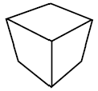
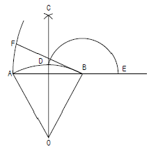
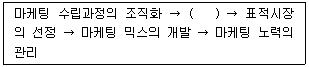

시각디자인산업기사 (2007-03-04 기출문제)
1과목: 색채학
1. 다음 중 식물의 이름에서 유래된 관용색명은?
- 피콕 블루 (peacock blue)
- 세피아 (sepia)
- 에메랄드 그린 (emerald green)
- 올리브 (olive)
(정답률: 알수없음)

2. 요하네스 이테의 '색과 형'의 연결이 잘못된 것은?
- yellow - 삼각형
- blue - 원
- red - 사각형
- orange - 타원형
(정답률: 알수없음)
3. 색채를 표시하는 방법중 인간의 색 지각을 기초로 지각적 등간격성에 근거한 것은?
- 현색계
- 혼색계
- 혼합계
- 표준계
(정답률: 알수없음)
4. 다음 관용 색명중 빨간계통의 색명이 아닌 것은?
- 산호색
- 연지색
- 벽돌색
- 초콜릿색
(정답률: 알수없음)
5. 다음 중 물체색의 색이름 (한국산업규격)에서 유채색의 기본색이 아닌 것은?
- 보라
- 갈색
- 분홍
- 살색
(정답률: 알수없음)
6. 다음 중 부의 잔상은?
- 밝기에 있어서 원자극과 흡사한 잔상이다.
- 정의 잔상 및 등색 잔상이다.
- 원자극과 모양은 닮았지만 밝기는 반대이다.
- 빨간 성냥불을 어두운데서 돌리면 빨간원을 그린다.
(정답률: 알수없음)
7. 색각과 시력에 관련된 시세포로서 세포 기능이 부족할 경우 색약이나 색맹이 되는 것은?
- 간상체
- 유리체
- 추상체
- 수정체
(정답률: 알수없음)
8. 배색에 관한 일반적인 설명이 맞는 것은?
- 보조색은 가장 넓은 면적의 부분에 주로 적용되는 색채이다.
- 통일감 있는 보조색은 전체 색채효과를 좌우하므로 다양한 조건을 가미하여 결정해야 한다.
- 보조색은 항상 무채색을 적용한다.
- 강조색은 가장 작은 면적에 사용되며, 액센트 컬러라고 한다.
(정답률: 알수없음)
9. 녹색위의 주황색이 황색위의 주황색보다 더 붉게 보이는 것은?
- 색상대비
- 채도대비
- 보색대비
- 명도대비
(정답률: 알수없음)
10. 교통표지판은 주로 색의 어떤 성질을 이용하는가?
- 진출성
- 반사성
- 대비성
- 명시성
(정답률: 알수없음)
11. 비렌의 색채 조화론의 기본이 아닌 것은?
- 탁색 (dull)
- 암색조(shade)
- 톤 (tone)
- 명색조 (tint)
(정답률: 알수없음)
12. 무채색에 관한 올바른 설명은?
- 채도가 있는 색이다.
- 백색, 회색, 흑색, 청색을 말한다.
- 색상과 명도만 있는 색이다.
- 채도가 0인 상태의 색이다.
(정답률: 알수없음)
13. 색채계획에 관한 내용으로 적합한 것은?
- 사용대상자의 유형은 고려하지 않는다.
- 색채 정보 분석 과정에서는 시장 정보, 소비자 정보등을 고려한다.
- 색채 계획에서는 경제적 환경 변화는 고려하지 않는다.
- 재료나 기능보다는 심미성이 중요하다.
(정답률: 알수없음)
14. 색광 혼합에서 3우너색의 중첩 혼합 결과는?
- 탁색이 된다.
- 저명도, 고채도가 된다.
- 무채색인 암회색이 된다.
- 무채색인 백색광이 된다.
(정답률: 알수없음)
15. 먼셀기호를 이용하여 측색할 경우 표준광원은?
- B광원
- C광원
- E광원
- X광원
(정답률: 알수없음)
16. 그레이스케일(Gray Scale)에 관한 설명중 잘못된 것은?
- 명도의 기준척도로 사용된다.
- 물체색의 표준과 TV, 사진, 인쇄 등의 명도상태를 확인하는 테스트로 사용된다.
- 흰색과 검은 색을 양끝에 놓고 그 중간에 명도차를 균일하게 나눈 무채색 단계이다.
- 색의 순순한 정도를 확인하는 척도이다.
(정답률: 알수없음)
17. 태양 아래서 모든 색이 적절히 흡수, 반사가 일어났을 때 보이는 가장 가까운 물체의 표현색은?
- 청색
- 검정
- 회색
- 빨강
(정답률: 알수없음)
18. 색의 3속성에 관한 설명으로 옳은 것은?
- 명도는 빨강, 노랑, 파랑 등과 같은 색감을 말한다.
- 채도는 빨강, 노랑, 파랑 등과 같은 색상의 선명함을 말한다.
- 채도는 빨강, 노랑, 파랑 등과 같은 색상의 밝기를 말한다.
- 명도는 빨강, 노랑, 파랑 등과 같은 색상의 선명함을 말한다.
(정답률: 알수없음)
19. 한국의 전통적 색채의 상징성 설명으로 옳은 것은?
- 적색은 남쪽을 상징한다.
- 흰색은 중앙을 상징한다.
- 황색은 동쪽을 상징한다.
- 청색은 북쪽을 상징한다.
(정답률: 알수없음)
20. 다음 중 한색과 난색에 대한 설명이 잘못된 것은?
- 노랑 계통은 난색이고 진출색, 팽창색이다.
- 파랑 계통은 한색이고 후퇴색, 수축색이다.
- 보라 계통은 한색이고 후퇴색, 수축색이다.
- 빨강 계통은 난색이고 진출색, 팽창색이다.
(정답률: 알수없음)
2과목: 인쇄 및 사진기법
21. 다층평판에서 화선부로 사용하는 친유성의 금속은?
- 구리
- 크롬
- 알루미늄
- 스테인리스
(정답률: 알수없음)
22. 상쾌한 자여등을 표현하기 위해서 가로로 긴 프레임을 두며, 필름의 가로와 세로의 비가 큰 카메라는?
- 뷰 카메라
- 콤펙트 카메라
- 인스턴트 카메라
- 파노라마 카메라
(정답률: 알수없음)
23. 활판술의 시조인 구텐베르크가 인쇄에 기계를 처음 사용하면서 적용한 인쇄방식은?
- 평압식
- 원압식
- 공판식
- 윤전식
(정답률: 알수없음)
24. 사진을 서로 이어 붙이거나 중복인화 또는 중복노출 시킴으로서 새로운 시각 효과를 구성하기 우해 제작된 작품 또는 기법을 무엇이라고 하는가?
- 소프트 포커싱 (soft focusing)
- 포토 그램 (photogram)
- 포토 몽타쥬 (photo montage)
- 디포메이션 (deformation)
(정답률: 알수없음)
25. 다음 중 정착액의 주성분(정착주약)은?
- 붕산
- 티오황산나트륨
- 아황산나트륨
- 빙초산
(정답률: 알수없음)
26. 제책을 할때 책등을 만드는 방식이 아닌 것은?
- 타이트백
- 홀로백
- 플렉시블백
- 실크백
(정답률: 알수없음)
27. 인쇄물 표면 가공의 목적과 가장 거리가 먼 것은?
- 인쇄물에 광택을 내기 위하여
- 잉크의 퇴색을 방지하게 위하여
- 인쇄물의 내구성을 높이기 위하여
- 풍부한 농담을 나타내기 위하여
(정답률: 알수없음)
28. 같은 평면 위에 화선부와 비화선부가 형성되어 지방과 수분의 반발력을 이용하여 인쇄하는 방식은?
- 평판 인쇄
- 볼록판 인쇄
- 오목판 인쇄
- 공판 인쇄
(정답률: 알수없음)
29. 빛이 어떤 한 매질에서 다른 매질로 입사할 때 그 진행방향이 달라지는 현상으로 사진에 이용하는 렌즈나 프리즘도 이 성질을 이용하여 화상을 결상시키는데 이와 같은 현상과 관계있는 것은?
- 간섭
- 굴절
- 투과
- 분산
(정답률: 알수없음)
30. 피사체와 그 주위 화면에 안개효과를 나타내고 싶을 때 사용되는 필터는?
- UV filter
- yellow filter
- fog filter
- red filter
(정답률: 알수없음)
31. 컬러네거티브 필름에서 청색 (blue) 감광층은 무슨 색으로 발색하는가?
- Yellow
- Magenta
- Cyan
- Black
(정답률: 알수없음)
32. 잉크가 화선부를 통과하여 피인쇄체에 인쇄되고 비화선부는 통과되지 않도록 하여 인쇄하는 방식은?
- 볼록판 인쇄
- 평판 인쇄
- 오목판 인쇄
- 공판 인쇄
(정답률: 알수없음)
33. PS판의 특징에 대한 설명 중 틀린 것은?
- 제판처리가 간단하며 신속하다.
- 암반응 및 잔반응이 많고, 사용 유효기간이 길다.
- 온.습도의 영향을 거의 받지 않는다.
- 내쇄력이 비교적 크다.
(정답률: 알수없음)
34. 광화학적 방법으로 제판하는 방식이 아닌 것은?
- 선화판
- 연판
- 망점판
- 콜로타이프
(정답률: 알수없음)
35. 속장을 철사로 꿰메고 등에 풀칠을 한 후 표지를 씌우고 표지와 속장을 함께 다듬재단하는 제책 방식은?
- 양장 제책
- 간이 제책
- 호부장 제책
- 무선철 제책
(정답률: 알수없음)
36. 다음 중 주로 철강 제품의 녹을 방지하는데 사용하는 포장지는?
- 상질지
- 타폴린지
- 방청지
- 결정지
(정답률: 알수없음)
37. 일반적인 평판 (오프셋) 잉크의 건조 형식은?
- 자외선 건조
- 증발건조
- 냉각건조
- 산화중합건조
(정답률: 알수없음)
38. 셔터가 열림과 동시에 플래시의 전기접점이 작동하도록 되어 있는 스트로보용 카메라의 전기적 연결 장치는?
- X접점
- FP접점
- M접점
- F접점
(정답률: 알수없음)
39. 사진을 발명한 다게르가 사용한 사진술로서 수은 증기로 현상하여 식염수(염화나트륨)에 정작하는 방법은?
- 은판사진술
- 건판사진술
- 질산사진술
- 알루미늄판사진술
(정답률: 알수없음)
40. 필름의 현상 결과를 좌우하는 요인과 가장 거리가 먼 것은?
- 현상액의 온도
- 현상 시간
- 교반 (흔들기)
- 초점거리
(정답률: 알수없음)
3과목: 시각디자인론
41. 입체의 특징으로 잘못된 것은?
- 입체는 면이 이동한 자취이다.
- 입체는 길이, 너비, 깊이, 형태와 공간 등의 특징을 가진다.
- 순수형 입체는 구, 원통, 육면체 등과 같이 단순한 형이다.
- 입체의 유형 중 순수형의 가장 단순한 분류는 직선계, 중간계, 수평계가 있다.
(정답률: 알수없음)
42. 미술공예운동의 영향을 받아 곡선적이며 동적인 식물무늬가 많은 장식위주의 디자인 운동이 아닌 것은?
- 팝아트 (Pop Art)
- 유겐트스틸 (Jugendstil)
- 스틸레 리베르타 (Stile Liberta)
- 시세션 (Secession)
(정답률: 알수없음)
43. 다음은 어떤 도법으로 그린 것인가?

- 3절 투시투상
- 정투상
- 표고투상
- 2등각 투상
(정답률: 알수없음)
44. 시각디자인분야의 설명으로 거리가 먼 것은?
- 정보전달을 목적으로 함
- 기호에 의해 의미를 전달
- 과학의 발달로 인쇄에서 영상까지 확대됨
- 사용가치를 추구
(정답률: 알수없음)
45. 윤곽선으로 닫혀진 공간은 하나의 도형을 이루며, 또한 윤곽선이 완전히 연결되어 있지 않아도 일정한 형태로 지각되는 법칙은?
- 객관적 태도의 법칙
- 근접의 법칙
- 폐쇄의 법칙
- 연속의 법칙
(정답률: 알수없음)
46. 입체파 화가들의 그림에서 많이 활용되는 것으로 주관적이고 개념적인 측면을 위해 사용되는 원근법은?
- 과장 원근법
- 다각 원근법
- 대기 원근법
- 직선 원근법
(정답률: 알수없음)
47. 독일 공작 연맹(DWB)의 특징으로 옳은 것은?
- 수작업을 통한 공예주의
- 규격화를 통한 기능주의
- 장식을 통한 역사주의
- 복고를 통한 키치(kitsch)주의
(정답률: 알수없음)
48. 지형의 높고 낮은 것을 지도위에 표시하는 직투상은?
- 축측투상
- 복면투상
- 표고투상
- 수직투상
(정답률: 알수없음)
49. 다음 중 C.I의 도입 시기로 가장 거리가 먼 것은?
- 이미지가 타 기업에 비해 저하되었을 때
- 경쟁 기업이 이미지를 바꿀 때
- 종래의 이미지를 발전, 디자인 측면을 부분 개선하고자 할 때
- 나쁜 기업이미지를 쇄신, 선도적 기업상을 형성하고자 할 때
(정답률: 알수없음)
50. 멤피스 디자인 그룹에 대한 설명 중 틀린 것은?
- 일상제품을 더욱 장식적이며 풍요로운 디자인으로 탐색하였다.
- 장난기있는 신기한 형태, 무늬, 장식을 사용하였다.
- 1981년 창립된 프랑스의 보수적인 디자인 그룹이다.
- 에토레 소트사스가 중심적인 역할을 하였다.
(정답률: 알수없음)
51. 디자인의 개념요소와 거리가 먼 것은?
- 점
- 선
- 면
- 리듬
(정답률: 알수없음)
52. 다음 중 디자인의 시각요소와 가장 거리가 먼 것은?
- 형태
- 중량
- 크기
- 색채
(정답률: 알수없음)
53. 산업혁명의 결과를 성공적으로 표출한 런던 만국박람회에서 철골구조와 판유리를 사용하여 조립공법의 위력을 과시한 전시관의 명칭은?
- 큐빅 홀 (CUBIC HALL)
- 레드 하우스 (RED HOUSE)
- 수정궁 (CRYSTAL PALACE)
- 버킹엄 궁 (BUCKINGHAM PALACE)
(정답률: 알수없음)
54. 다음 작도는 무엇을 구하기 위한 것인가?

- 삼각형에 외접하는 원호
- 원호와 같은 길이의 직선
- 원호 길이의 삼각형
- 원을 이용한 원호 그리기
(정답률: 알수없음)
55. 디자인과 관련된 법규 중 해당되지 않는 것은?
- 디자인 보호법
- 저작권법
- 실용신안법
- 상표보호법
(정답률: 알수없음)
56. 다음 중 미술공예운동에서 주장한것은?
- 공장제 대량 생산
- 반기계를 통한 품질회복 운동
- 장식미술 운동
- 기계적 또는 기하학적 형태 중시
(정답률: 알수없음)
57. 4차원 디자인에 속하는 것은?
- 패키지 디자인
- 타피스트리 디자인
- 무대디자인
- 그래픽 디자인
(정답률: 알수없음)
58. 상품개발의 초기 단계에 디자인 관련 정보를 정리한 자료로서 상품컨셉, 시장상황, 소비자층, 판매전략, 경쟁제품 분석, 유통경로 등이 포함된 자료를 가리키는 용어는?
- Annual Report
- Hand-on Analysis List
- Design Brief
- Design Comprehensive
(정답률: 알수없음)
59. 기계기구나 구조 전체의 조립 상태를 나타낸 도면이며, 특히 복잡한 구조를 알기 쉽게 하고 각 단위 또는 부품의 관련을 명확하게 나타낸 도면은?
- 계획도
- 제작도
- 부품도
- 조립도
(정답률: 알수없음)
60. 팝 아트의 설명중 틀린 것은?
- 기계 미학에 충실한 기능주의 디자인이다. 이다'라고 말했다.
- 엘리트 문화에 반대하는 젊고 활기찬 디자인 운동이다.
- 앤디 와홀이 대표적 작가이다.
- 통속적이고 일상적인 이미지를 창조하였다.
(정답률: 알수없음)
4과목: 시각디자인실무 이론
61. 마케팅의 정의로 가장 알맞은 것은?
- 개인이나 조직의 이익을 위하여 제품 서비스를 개발하여 이를 촉진 및 유통시키는 활동을 계획하고 실천하는 과정
- 단체를 조직하고 통제하여 경쟁전략을 추구하고 유사한 특징을 갖는 단체의 우위에 서기 위한 과정
- 표본조사를 통해 동기와 행동의 결론을 연구하여 도출하는 과정
- 조직의 팀구성원을 통일된 목적에 따라 활동 영역을 명확히 하는 과정
(정답률: 알수없음)
62. 패스트푸드점에 들어가 주문을 망설이던 중 천정과 카운터 등에 디스플레이 되어 있는 것을 보고 주문햇다면 이는 다음 중 무엇과 가장 연관이 있는가?
- Point of Purchase
- Selling Point
- Simulation
- Catch Phrase
(정답률: 알수없음)
63. 다음 마케팅 관리의 과정 중 ( )에 들어갈 가장 적합한 내용은?

- 시장조사 분석
- 마케팅 지출의사 결정
- 연간계획 수립
- 효과적 배급경로 선택
(정답률: 알수없음)
64. 타이포그래피에 대한 설명중 잘못 된 것은?
- 활자 혹은 활판에 의한 인쇄술을 가리켜 왔지만 오늘날에는 주로 글자를 구성하는 디자인을 일컫는다.
- 글자체, 글자 크기, 글자 사이, 글줄 사이, 판형의 크기, 인쇄면적, 여백 등을 조절하여 전체적으로 읽기에 편하도록 구성하는 표현 기술을 말한다.
- 활판에 의한 글자의 구성뿐만 아니라 평판에 의한 것도 타이포그래피의 범주에 속하나 오목판에 의한 것은 포함되지 않는다.
- 모리스(W.Morris)는 '한권의 인쇄된 책은 글자 디자인과 글자 사이, 글줄사이의 조절과 문안의 배열 외에 어떤 장식도 갖고 있지 않지만 분명히 예술작품이다'라고 말했다.
(정답률: 알수없음)
65. 에디토리얼 디자인은 단순히 레이아웃 행위로만 그치는 것이 아니라 책자의 포맷을 기획하는 일에서부터 제작되어 판매대에 올려졌을 때까지의 모든 과정을 포함한다. 다음 설명중 틀린 것은?
- layout - 에디토리얼 디자인에서 가장 중요하고 핵심이 되는 요소이다.
- planning - 에디토리얼 디자인에 있어서 기본 골격에 해당된다고 할 수 있다.
- typography - 에디토리얼 디자인에 있어 메시지를 전달하는 가장 중요한 요소중의 하나이다.
- photography와 illustration - 사진과 일러스트레이션은 본문을 보완하거나 모자라는 공간을 채우는 역할에 불과하다.
(정답률: 알수없음)
66. 소비자 행동에 미치는 요인과 가장 거리가 먼 것은?
- 문화적 요인
- 사회적 요인
- 심리적 요인
- 생산적 요인
(정답률: 알수없음)
67. 상표이미지를 시각적으로 체계화, 단순화하여 브랜드를 소비자에게 확실히 인식시키기 위한 것은?
- S.E.
- B.I.
- N.A.
- B.G.M
(정답률: 알수없음)
68. 신호, 문자, 활자, 통계, 도표, 지도 등은 시각 디자인의 기능별 분류 중 어디에 속하는가?
- 지시적 기능
- 설득적 기능
- 상징적 기능
- 기록적 기능
(정답률: 알수없음)
69. 교통 광고를 형태별로 분류한 것중 적합하지 않은 것은?
- 포스터형 광고
- 와이드 컬러형 광고
- 액자형 광고
- 애드벌룬형 광고
(정답률: 알수없음)
70. 다음 중 티저광고(teaser approach)를 설명한 것은?
- 일정한 주제에 의한 특별히 기획된 특집형태의 기획광고
- 호기심을 목적으로 광고내용 전체를 여러 차례에 걸쳐 나누어 하는 광고
- 소매점등 상품과 고객의 접점을 위한 구매시접 광고
- 특정한 테마를 정하여 일정한 형식으로 장시간 계속하는 광고
(정답률: 알수없음)
71. 중간 판매업자를 거치지 않고 생산자와 소비자 또는 생산자와 소매업자 사이에서 직접적으로 이루어지는 판매행위를 말한 것은?
- 디자인 마케팅 (design marketing)
- 컬러마케팅 (color marketing)
- 브랜드마케팅 (brand marketing)
- 다이렉트마케팅 (diret marketing)
(정답률: 알수없음)
72. 다음 중 신문광고의 조형적 요소에 포함되지 않는 것은?
- 일러스트레이션 (illustration)
- 보더라인 (boder line)
- 로고타입 (logotype)
- 바디 카피 (body copy)
(정답률: 알수없음)
73. 잡지 광고의 특성은?
- 특정지역 광고에 적당하며 지방광고에 유리하다.
- 대상이 명확하고 특정 독자층의 심리를 노릴수 있다.
- 신속하고 적시에 할 수 있다.
- 지면이 작으므로 자세한 정보를 주기 어렵다.
(정답률: 알수없음)
74. 기업에서 구인광고는 신문광고 중 어느 분야에 속하는가?
- 영업광고
- 제품광고
- 돌출광고
- 임시광고
(정답률: 알수없음)
75. 일러스트레이션의 용도에 의한 분류중 의학, 생물, 천문, 지리 등을 다루는 것은?
- 과학 일러스트레이션
- 패션 일러스트레이션
- 산업 일러스트레이션
- 편집 일러스트레이션
(정답률: 알수없음)
76. 비트맵 프로그램(Photoshop 등)을 이용하여 컬러 이미지를 흑백 이미지로 변경하기 위해 사용한 방법중 잘못된 것은?
- Image ＞ Adjustments ＞ Hue/Saturation 값을 조절한다.
- Image ＞ Adjustments ＞ Desaturate 을 활용한다.
- Image ＞ Adjustments ＞ Posterize 값을 조절한다.
- Image ＞ Mode ＞ Grayscale 을 활용한다.
(정답률: 알수없음)
77. 마케팅 믹스(Marketing Mix)의 4대 구성요소가 아닌 것은?
- 제품 (product)
- 가격 (price)
- 영향력 (power)
- 유통 (place)
(정답률: 알수없음)
78. "Good Design is Good Business" 의 의미와 가장 가까운 것은?
- 디자인 아키텍쳐의 중요성
- 디자인 매니지먼트의 중요성
- 디자인 컨설턴트의 중요성
- 디자인 크리에이티브의 중요성
(정답률: 알수없음)
79. 글줄과 글줄 사이를 지칭하는 것으로 여백미와 가독성에 영향을 주는 것은?
- 자간
- 글간
- 행간
- 단간
(정답률: 알수없음)
80. 기업의 제품을 소비자에게 널리 알리기 위해 건물 위에 설치하는 간판의 형태는?
- 점두간판
- 옥상간판
- 입간판
- 전주간판
(정답률: 알수없음)